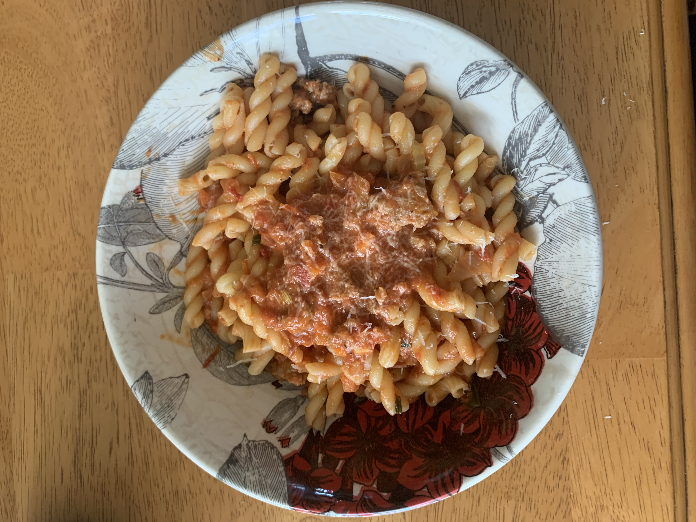
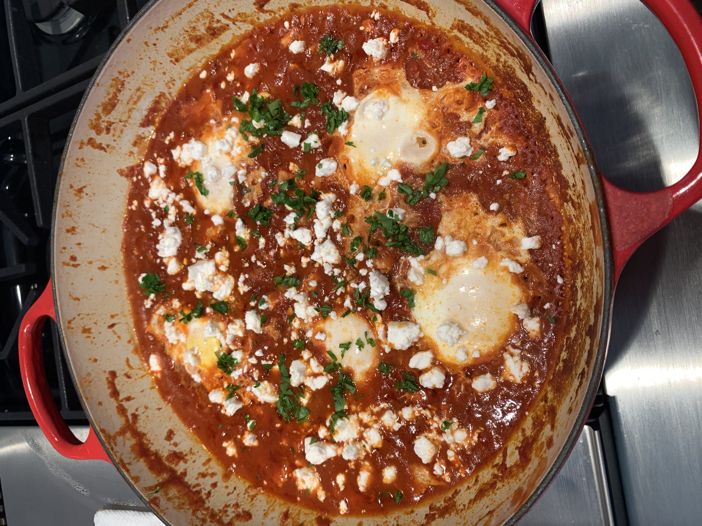
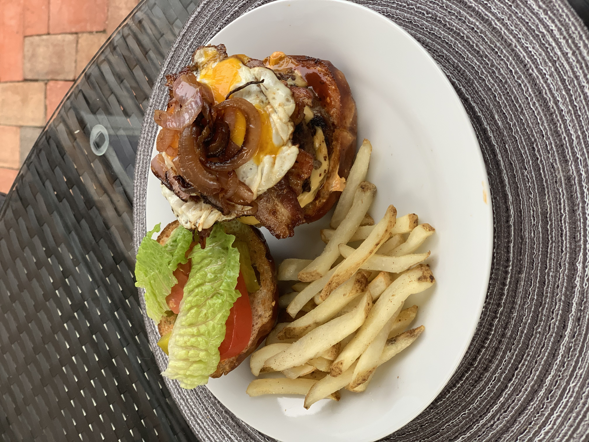
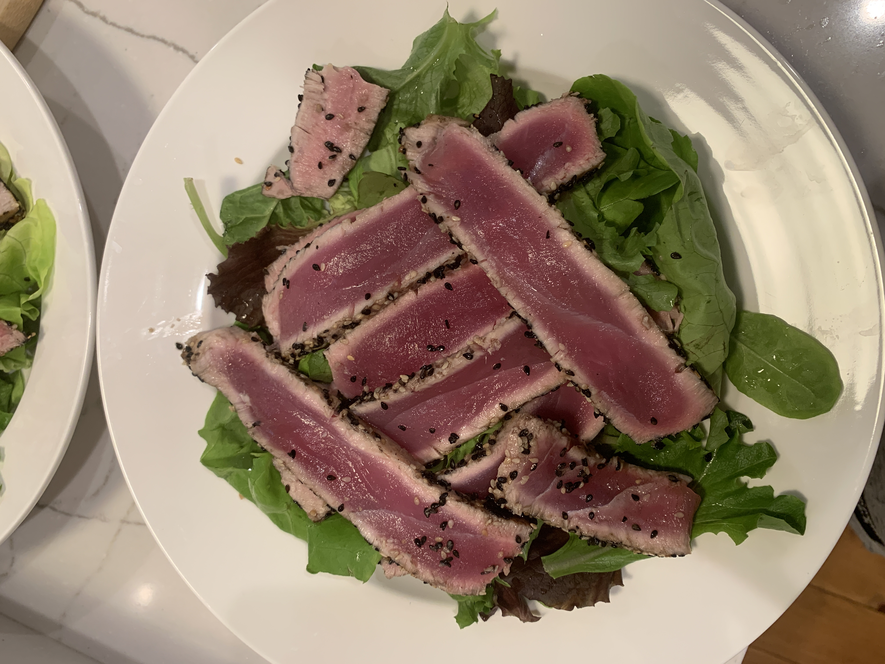
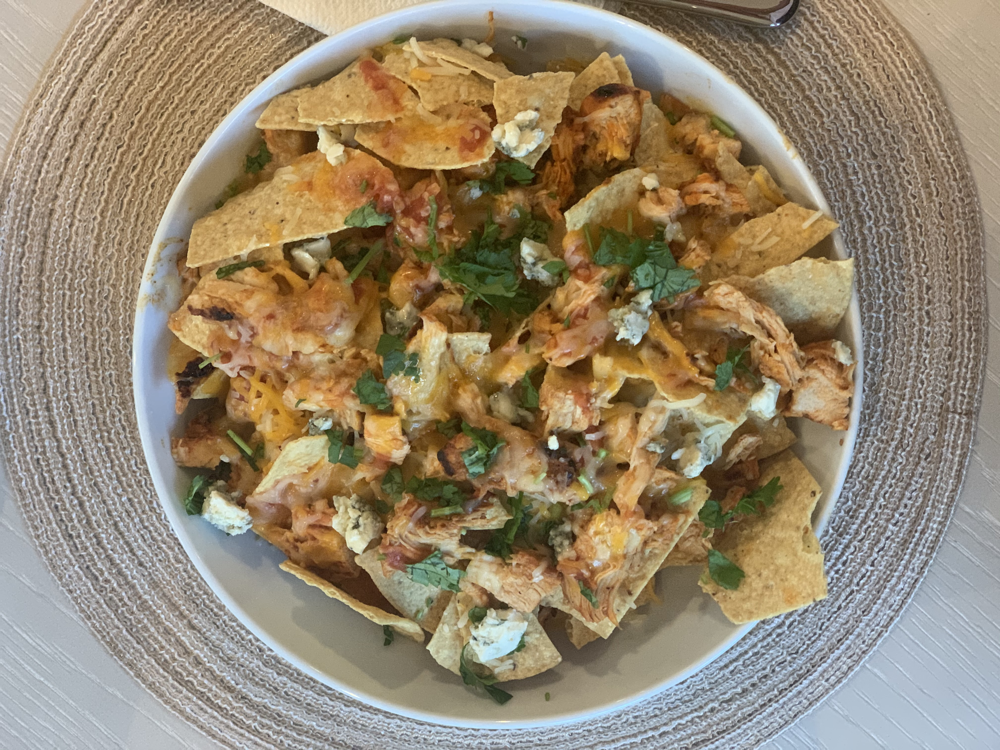
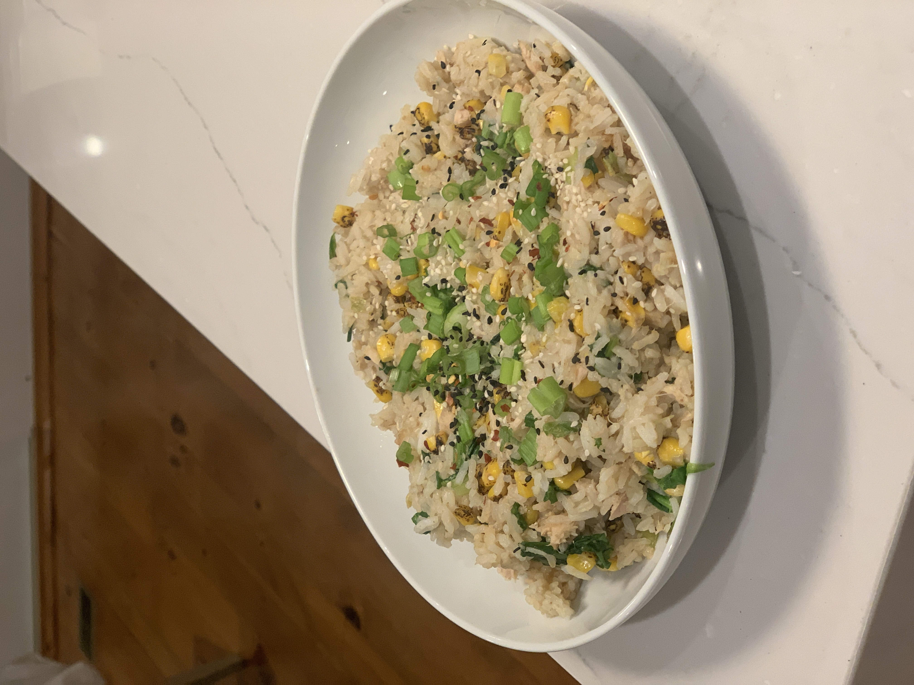
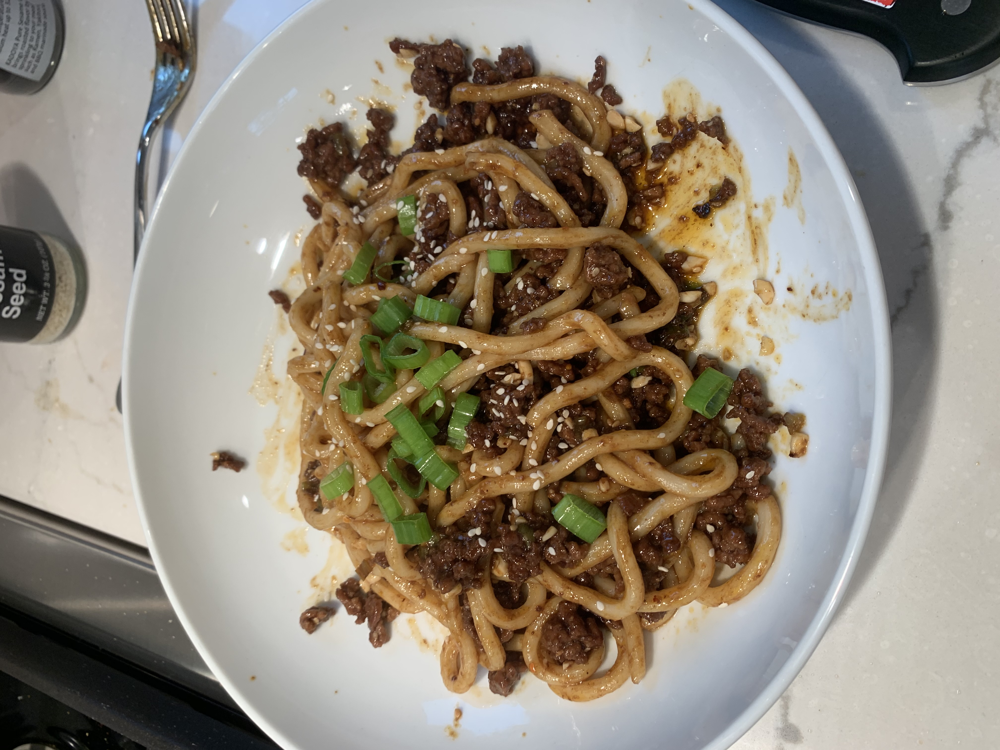

My most recent recepie that I have been absolutely loving is a nice and easy sitr fry with noodles. Since being at college I have taken a liking to chicken. It's easy to cook, pretty cheap to buy in bulk and freeze, and a really good source of lean protien. I love a good stir fry because of how easy it is to use ingredients that are about to expire, you just throw some protien, greens and veggies in with some garlic and you've already gotten the base. However; What makes a noodle stir fry great is the sauce. I like to use a ginger, brown sugar base, with some hoisin sauce, soy sauce, and sesame oil for my noodles! However; much like the rest of this dish, you could literally put whatever you want in there.
My mum taught me how to make this dish when I was in highschool. She had learned it from my grandmother, and my grandmother from her mother. A traditional Italian bolognese consists of a base of celery, carrots, garlic, and onion. You can add whatever ground meat you want to it though most traditionally people use a mix of beef and pork, and sometimes veal. I usually use whatever I have on hand, I use a whole can of crushed red tomatoes and some tomato paste to thicken it and give it a much deeper taste.
  
  
I get most of my inspiration (and where I first found an interest in cooking) is from Youtube. I get people popping up in my reccomended videos cooking amazing food and I watch their video, maybe a few more, get really hungry and go make some of the food that I watched. Some people I reccomend watching are Binging With Babish, Sam the Cooking Guy, and Joshua Weissman.